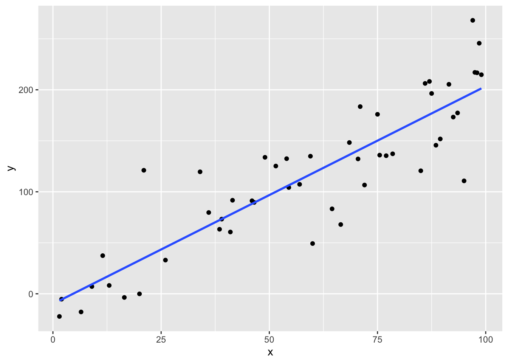

Chapter 2 Introduction
2.1 What came before - Linear models
If you are reading this book, you might already be familiar with linear models. Given our data, if we make some key assumptions (which we will explain later), we can perform either inference or prediction by assuming that our response value forms a linear relationship with our explanatory variable (or variables)
The reasoning of linear models is often intuitive, if we make a scatterplot our data, and see this:
## ── Attaching packages ─────────────────────────────────────── tidyverse 1.3.0 ──## ✓ ggplot2 3.3.3 ✓ purrr 0.3.4
## ✓ tibble 3.0.6 ✓ dplyr 1.0.4
## ✓ tidyr 1.1.2 ✓ stringr 1.4.0
## ✓ readr 1.4.0 ✓ forcats 0.5.1## ── Conflicts ────────────────────────────────────────── tidyverse_conflicts() ──
## x dplyr::filter() masks stats::filter()
## x dplyr::lag() masks stats::lag()
we might want to fit a straight line through the cloud of points, i.e. modeling the relationship linearly.

To interpret this relationship and make predictions, we need to know the slope and intercept of this line. This is done by minimizing the least squares, which will be explored in chapter 3 @ref{linear}.
2.2 Some definitions
Predictor - the thing on the y-axis Explanatory variable - the stuff on the x-axis. Note that we can have more than one (but won’t plot it then), and then this becomes multivariate regression.
Something that is an estimated quantity will have a hat over it. For example, we might assume that there is some ‘true’ (but unknown) linear relationship between our explanatory variables and our predictor.
\[ y = \beta_0 + \beta_1 x\]
From our sample data, we use a linear model to make an estimate of \(\beta_0\) and \(\beta_1\),
so our estimate/best guess of this true model relationship is
\[ \hat y = \hat\beta_0 + \hat\beta_1 x\] We of course want our \(\hat\beta_0\) and \(\hat\beta_1\) to be a ‘good’ and ‘close’ estimate of the unknown quantities \(\beta_0\) and \(\beta_1\). Ideas of what ‘good’ and ‘close’ mean will be covered in the next section.
2.3 Assumptions of linear models
A linear model might very well be a good model if our data look like ??. However, there are many cases where it might be inappropriate to use a linear model. To understand these cases, we first review the assumptions of linear models.
Linear models assume:
- The relationship between the explanatory variables and the response is linear
- The samples are independent.
- The errors are normally distributed with mean 0 and constant variance
We can write these assumptions down in notation as such.
\[y_i = \beta_0 + \beta_1 x + \epsilon_i \] where \[ \epsilon_i \sim \text{iid } N(0,\sigma^2)\] In words, this means that each this means that the errors are independent and identically distributed by the normal distribution, with mean 0 and constant variance \(\sigma^2\) (notice how there is no subscript \(i\) for the variance)
If these assumptions hold, we then write our model as \[ \hat y_i = \hat\beta_0 + \hat\beta_1 x_i\]
How can we tell when these assumptions are violated?
- Knowledge of the data.
- Plots
2.4 What happens when we break the assumptions of linear models
Linear models are generally robust, and can be reasonable when assumptions are not exactly met. However, if we know assumptions are not met, and how they are not met, it is appropriate to use a more appropriate model for the data.
2.5 Random and Systematic Component
We will now analyze the assumptions for linear models and explore how we can generalize them. (and create generalized linear models!)
\[y_i = \beta_0 + \beta_1 x + \epsilon_i \] \[ \epsilon_i \sim \text{iid } N(0,\sigma^2)\]
We refer to the first equation as the Systematic Component, and the second equation as the Random Component.
A Generalized Regression Model has a systematic component:
\[ g(y_i) = \beta_0 + \beta_1 x + \epsilon_i\] To generalized the systematic component, we use a link function \(g(y)\), so we now require some function of the response to be linearly related to our explanatory variables.
and a random component:
\[ \epsilon_i \sim \text{ iid } EDM(\phi) \] In words, the errors are independently distributed according to some probability distribution in the Exponential Dispersion Family, which will be discussed in the next chapter. Normal, Binomial, and Poisson distributions all fall into this family.
We note that normal linear models fall exactly into this framework, where \(g(y_i) = y_i\) the identity function, and use the Normal distribution as our random component.
Deciding on what Random and Systematic component to use requires u
2.6 Random and Systematic components for Binary and Count data
The two most common cases of GRMs are those for Binary and Count data
For Binary data, the systemtatic component is, and the random component is: We call these types of GRMS logistic regression or …
For Count data, the systematic component is, and the random component is. We call these types of GRMS
2.7 Parameter estimation
The last difference between linear models and generalized linear models is the way we estimate the parameters \(\beta\).
2.8 Conclusion
Linear models are not always the best tool for describing relationship in data. Luckily we can generalize the ideas and framework developed in linear models to hold for more general cases to create GLMs. Using a more general framework and more general assumptions allows us to build tools that will hold for all GRMs. The most notable of these that we will further explore are GRMs for binary data (ch4) and count data (ch5)
2.9 Examples
Perhaps some examples of data and students can tell what type of data it should be modeled by?